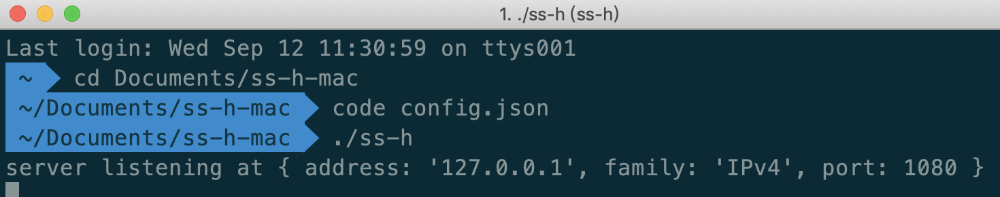
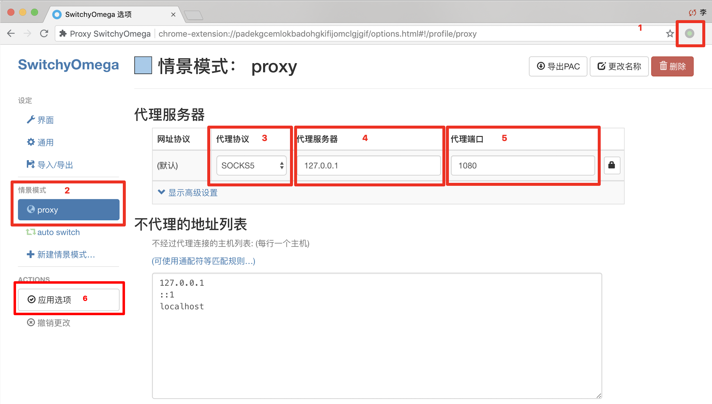
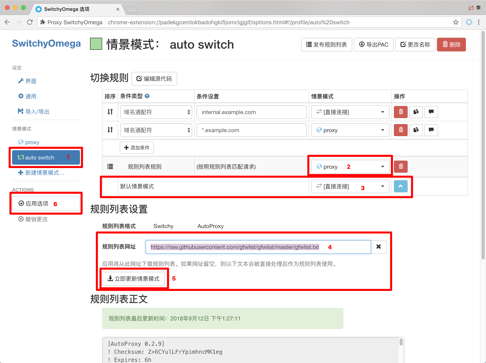

Heroku是日本一家网站。为开发者提供了免费部署项目的服务器。虽然访问Heroku是被qiang的。但是用Heroku部署后的应用(saas/web app)其主机在美国和欧洲，且主机地址没有被qiang。利用这一点就可以免费搭建一个自己的ss服务器。
由于有GitHub上的开源项目，其搭建过程可以称之为傻瓜式。
注册Heroku
到这里注册： https://signup.heroku.com/ [需要富强上网]
ps：建议用gmail邮箱注册。163啥的应该是注册不了滴
这一步需要靠你自己了。什么蓝🙃灯赛🙂风我相信你可以的。
如果你实在一点办法都没有。我给你俩在线代理的网站。速度可能慢点。 https://www.anyproxy.top https://www.anyproxy.cn只能帮你到这了！
惊奇地发现，Heroku好像不被qiang了😃😃😃
部署
登录上你的Heroku之后，
进去之后改两个地方：
- App name
- 起个名字。是唯一标识的。会提示你可不可用。
- KEY
- 设置一个密码。
这两个地方我们会在下一步用到。
一切从简，其他地方不必修改。
启动本地客户端
下载：https://github.com/onplus/shadowsocks-heroku/releases
根据你是什么系统。下载对应的客户端压缩包。
解压后有个
config.json文件：{ "server": "你设置的AppName.herokuapp.com", "local_address": "127.0.0.1", "scheme": "ws", "local_port": "1080", "remote_port": "80", "password": "这里输入你设置的密码", "timeout": 600, "method": "aes-256-cfb" }启动
Windows：
直接打开start或ssh的exe文件都可以打开。区别是一个在后台运行了。一个是有黑框界面。
Mac/Linux:
cd到该目录下，执行
./ss-h。你会看到一条server listening at {xxx}的提示。
这样本地客户端就启动了。
配置代理
在Chrome浏览器安装Proxy SwitchyOmega插件
安装Proxy SwitchyOmega
不能访问谷歌的到这里下载：
进去后输入id：padekgcemlokbadohgkifijomclgjgif
配置Proxy SwitchyOmega
如图。6步。

切换到proxy模式就可以Google了~
进阶配置
proxy模式就是所有的网站都通过代理来访问。这样其实有点多余。
下面我们通过添加规则，让插件去判断什么情况下启用代理。
在插件的 auto switch里，添加规则列表网站：
https://raw.githubusercontent.com/gfwlist/gfwlist/master/gfwlist.txt
如图，记得点应用选项以保存。

这样你选择auto switch模式，插件就可以按照规则来判断是否使用代理。
如果你想访问的 网站不在规则列表里。在上面的规则上自己添加一个条件就好啦~
本篇教程结束。这种方法永久免费还不会被封。
缺点就是只能在PC端使用。关于手机端的教程下次再写啦~